La Ceja de El Alto, una zona comprendida entre los barrios 16 de julio y 12 de octubre, es uno de los núcleos territoriales más importantes de su ciudad y del área metropolitana paceña. En este artículo exploramos su compleja organización del suelo.
Este trabajo es fruto de un trabajo colaborativo entre los estudiantes del paralelo D; Vania Calle, la docente de la materia Urbanismo y Territorio II de la Facultad de Arquitectura de la UMSA; y el Lab TecnoSocial. Este artículo es un resumen de una investigación académica que esperamos publicar pronto. Los detalles metodológicos del trabajo se encuentran al final del texto.
Los estudiantes recolectaron datos de los 6 manzanos ubicados entre las calles 1 y 3 y las avenidas 6 de marzo y Raúl Salmón de la Ceja. Usaron dos formularios: con el primero capturaron información georreferenciada sobre el uso de suelo, y el segundo era una encuesta dirigida a los administradores de las distintas unidades económicas para conocer sus percepciones sobre la zona. Encontramos 621 negocios y tuvimos 180 respuestas a nuestra encuesta. Analizamos los datos con la ayuda de R y flourish. Además, la información cuantitativa y cartográfica fue complementada con observaciones al terreno realizadas por Vania Calle en enero de 2023.
La Ceja es una zona con una cultura comercial muy antigua. Entre 1928 y la guerra del Chaco, el crecimiento poblacional de la ciudad La Paz generó nuevas urbanizaciones en las periferias, la Ceja comenzó a ser habitada y se comenzaron a desarrollar allí sus actividades económicas.
En 1947, se fundó la Junta de Comerciantes de la Ceja, una organización que otorgó respaldo social a las actividades económicas y a la ampliación de las urbanizaciones que se desarrollaban en la zona.
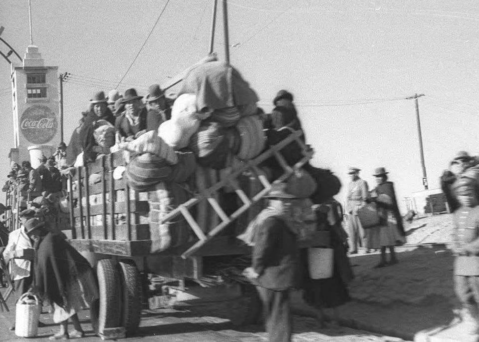
La Ceja en 1954 (Fotografía: Altupat
En la década del 70, La Ceja es reconocida como un nodo territorial importante para toda el área metropolitana. En el documento “Modelo de Crecimiento de la Ciudad de La Paz”, publicado en 1976, la Ceja de El Alto es reconocida como un mercado de acopio y distribución de productos, en la carretera que conecta La Paz, Oruro y Laja.
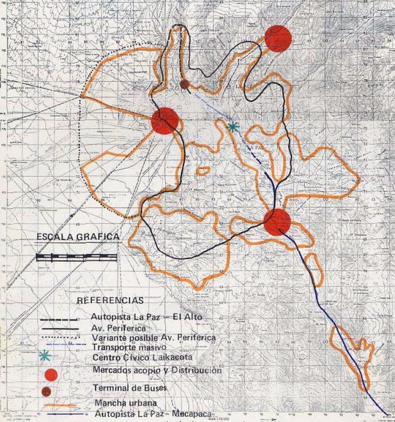
Eje de expansión El Alto y zonas de mercado y distribución - 1976 Fuente: (Saravia et al., 1976, p. 27)
Posteriormente en el año 2013, se autoriza al Ministerio de Planificación del Desarrollo, la suscripción con el Banco Interamericano de Desarrollo BID, un contrato de préstamo destinado a financiar el Programa Multifase de Reordenamiento Urbano de La Ceja, Fase I. A la fecha, si bien las anteriores iniciativas buscaban mejorar la calidad de vida del sector de la Ceja de El Alto,
En la actualidad, el congestionamiento vehicular y el comercio en vía pública marcan el paisaje y la vida social de la Ceja. Desde el gobierno municipal, se han desarrollado varios programas de Reordenamiento Urbano en La Ceja, pero no tuvieron mucho resultado.
Según varios modelos de economía espacial, en las ciudades se concentran los principales recursos y agentes económicos, incluyendo materia prima, capital, trabajo e infraestructuras (Munizaga Virgil, 2014, p. 121). En la ciudad de El Alto hay una enorme concentración de actividades terciarias vinculadas al comercio y los servicios, que impactan en su formación espacial.
Según el Ministerio de Desarrollo Productivo y Economía Plural (2016, p. 8) el 75% de la actividad económica de El Alto corresponde a los sectores de servicio, muy por encima de la manufactura (16%) o la extracción de materias primas (1%). La pobreza urbana, las escasas oportunidades laborales, la tradición comercial familiar y la falta de un impacto real de los apoyos a los pequeños empresarios hicieron de que en El Alto la economía informal sea la principal fuente de ingresos económicos para las familias.
La Ceja refleja esta realidad. En nuestra recolección de datos, encontramos que el 57.17% de los negocios de la zona se dedican al comercio de bienes y servicios. En segundo lugar, se tiene un 30.27% de negocios que se dedican a la salud, que son principalmente consultorios de salud privados. Luego se tiene un 7.09% de negocios dedicados al turismo y hotelería, un 2.74% de lugares administrativos-financieros, y, por último, 2.74% de lugares dedicados a la educación.
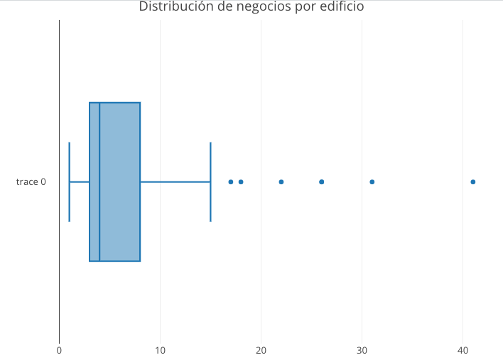
En este gráfico se puede observar la distribución de negocios por edificio: es común que en La Ceja, haya edificios que albergan entre 3 y 8 locales. Pero también hay algunos casos, más específicamente centros comerciales, que pueden llegar a tener hasta 40 negocios
En el siguiente mapa se puede observar la cantidad de negocios por lote en los 6 manzanos estudiados. Los lotes con más negocios se encuentran entre la calle Alfredo Franco Valle y la calle 1. En el mapa de calor podemos ver el área exacta de mayor concentración de actividades económicas.

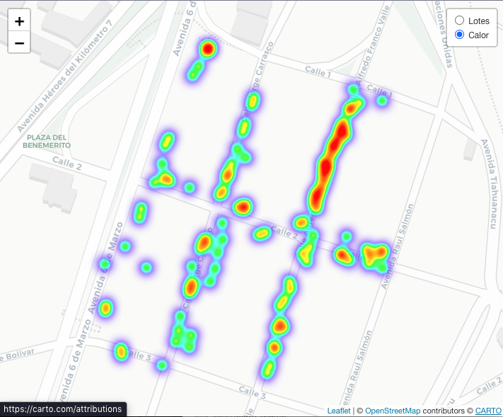
La calle se organiza para favorecer la aglomeración. Hay congestionamiento vehicular en los cruces viales. La calzada próxima a la acera es ocupada por comerciantes minoristas ambulantes, asociados y no asociados (estos últimos suelen ser echados por otros comerciantes de puesto fijo o por otros minoristas afiliados a algún sindicato). En la acera, el comercio es ocupado por comerciantes minoristas y mayoristas asociados a las tiendas de los edificios de planta baja y subsuelo. Esta zona es transitada por los consumidores directos y la población de paso.
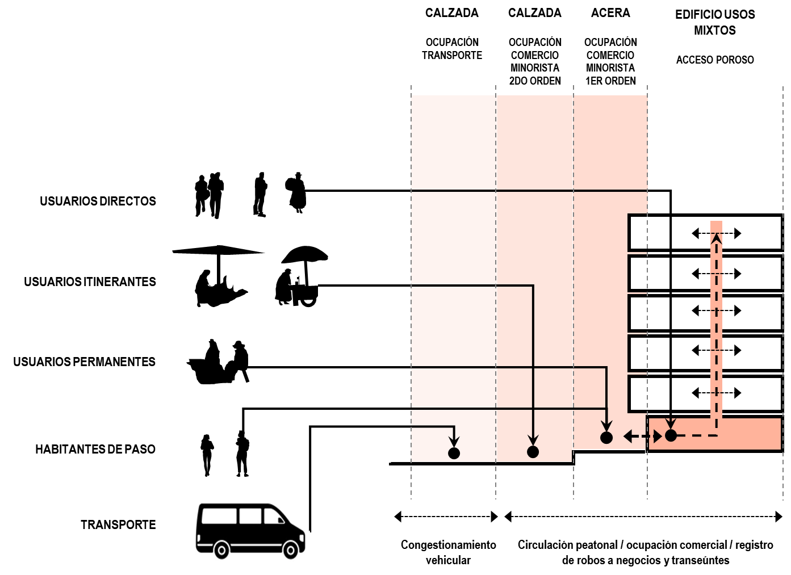
Ceja de El Alto: sectores del espacio público contiguos a los edificios de uso mixto Fuente: Elaboración propia.
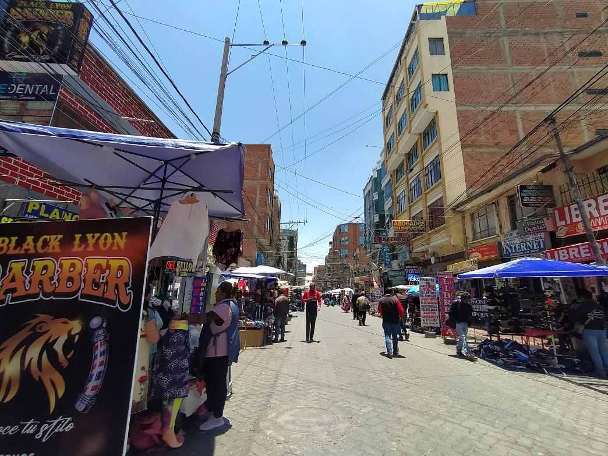
Fotografía capturada por Vania Calle en fecha 16 de noviembre de 2022

Fotografía capturada por Vania Calle en fecha 06 de enero de 2023
El Municipio de El Alto ha intentado regular el comercio en la vía pública, a través de Ordenanza Municipal N°106/2004, que prohíbe autorizar nuevos asentamientos de puestos en la Ceja y, a su vez, autoriza asentamientos comerciales provisionales en espacios que no interfieran con el tráfico peatonal y vehicular. A pesar de estas prohibiciones, el comercio en la vía pública persiste desde la mañana hasta altas horas de la noche.
Asimismo, el espacio público, concentra de forma porosa el comercio mayorista y minorista, y los transeúntes consumen la oferta variada de bienes en la calzada, calle y aceras.
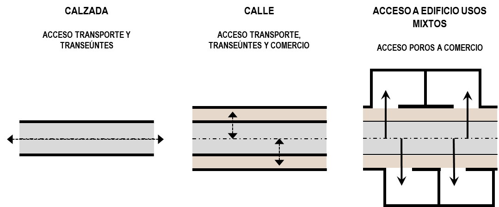
Fuente: Elaboración propia.
Las redes familiares mueven la economía informal alteña. Dependiendo del capital inicial y la organización de la familia, pueden abrir un puesto de comercio mayorista o un puesto de comercio minorista.
En esta economía comercial, los ingresos llegan a las familias en función a la cantidad de ventas; por tanto, para poder ganar más, los comerciantes invierten estratégicamente en productos que sean deseados por sus compradores (Masello, 2021). Por eso, los negocios en La Ceja son muy rentables en su mayoría. En una encuesta que realizamos a 180 administradores de negocios, el 86% de ellos afirmó que sus negocios son rentables; frente a un 13% que dijo que no lo son.
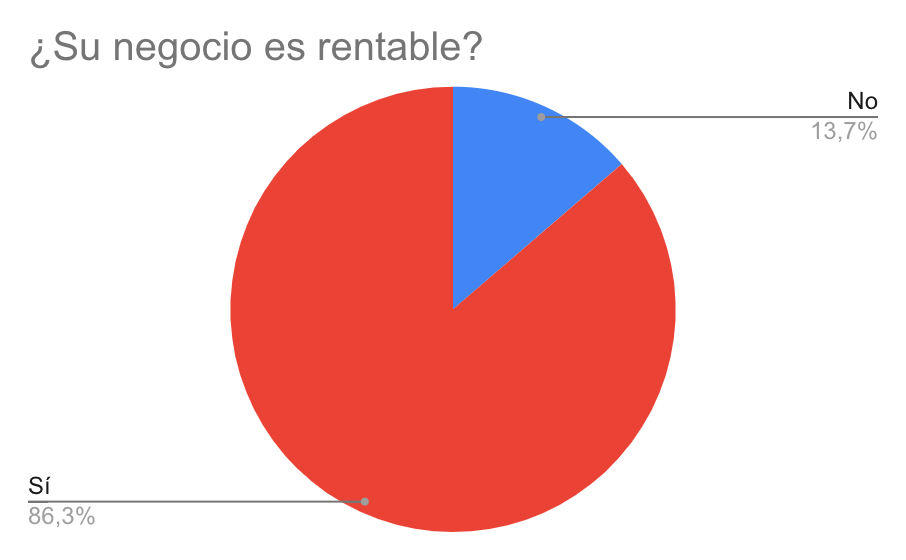
En el siguiente gráfico podemos ver los 20 tipos de negocios más comunes en la Ceja. Si asumimos que la gente invierte en algo que es rentable, estos rubros son los más rentables en la zona.
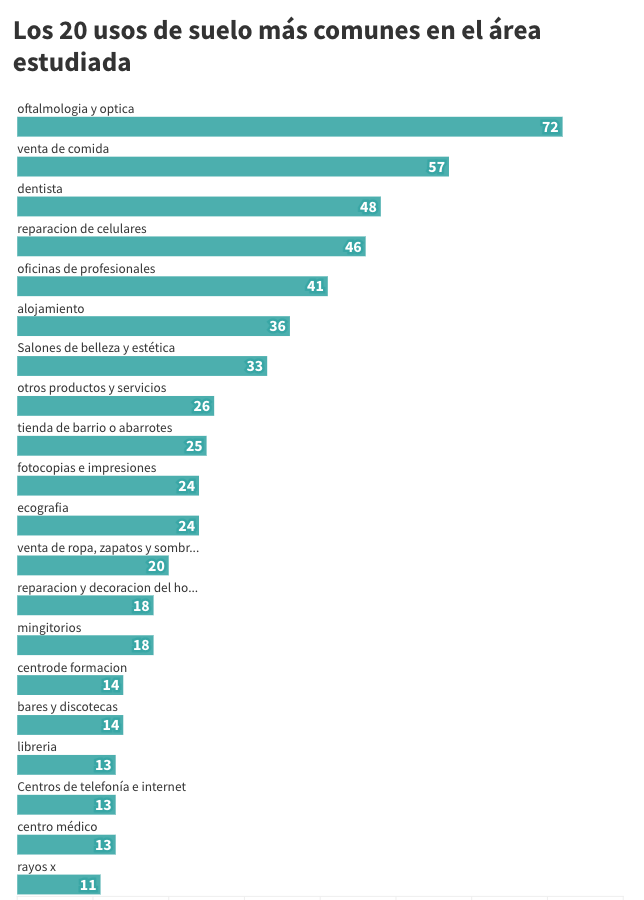
Por otra parte, la mayoría de los locales son alquilados. El 83.68% de los encuestados declaró que su local era alquilado, frente a un 12.63% que dijo ser propietario del negocio y un 3.68% que dijo que tiene un contrato en anticrético.
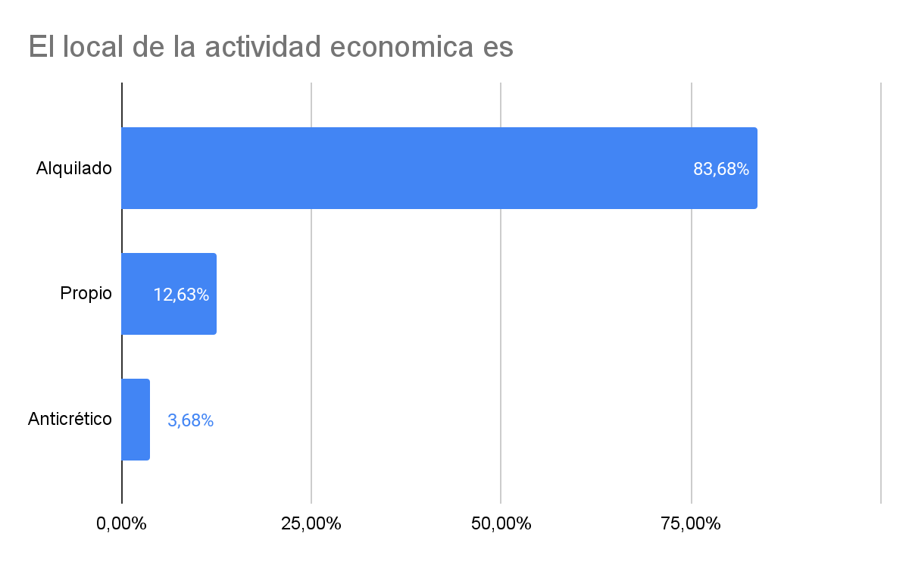
Vania Calle conversó con los propietarios de algunos locales y constató que el precio del alquiler varía en función al nivel del edificio en el que se encuentre el local. Por ejemplo, si un local se encuentra en la Planta Baja de un edificio y colinda con la calle, su precio estimado es de 111 Bs. por metro cuadrado. Si el local está en el segundo, tercer o cuarto piso, el metro cuadrado puede llegar a costar 70 bs. Mientras más cerca esté el negocio de la calle y sea más accesible para los compradores, el precio del alquiler será más caro; mientras más lejos esté, el precio será más barato.
Además los montos varían según el uso que el comerciante le quiera dar al local, ya sean tiendas de barrio, venta de ropa, venta de alimentos, u otros. En cada caso se debe dejar garantías al propietario del local y se comparte entre varios locales el precio del uso de pasillos.
La Ordenanza Municipal Nº 007/96 del 6 de marzo de 1996, aprueba la creación de los distritos municipales urbanos 1, 2, 3, 4, 5, 6 y el Distrito municipal rural. La Ceja de El Alto está en el distrito urbano 6.
A través de esta ordenanza se aprueba también el Patrón de Usos de Asentamiento Especial Urbano, que indica que La Ceja de El Alto tiene un patrón de Densidad Alta (D.A.), es decir, está compuesta de edificios que usan el suelo tanto para lo comercial, como para el uso residencial.
La norma establece que para construir en la zona de la Ceja; el área máxima a cubrir en zócalo es 90% del terreno, donde un 70% se destina a la torre, con estacionamientos de 15 metros, por cada 200 m2 construidos. Si los edificios cuentan con 6 o más pisos, la normativa pide que cuente con ascensores. Ver el siguiente patrón.
Parámetros de edificación D.A. USPA - 1996

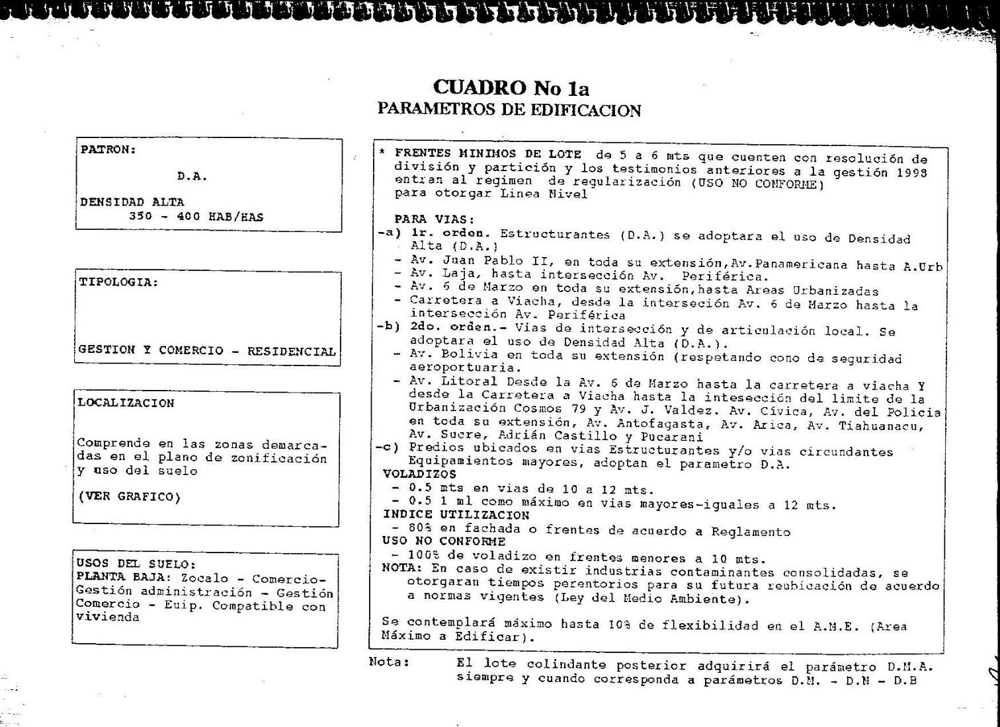
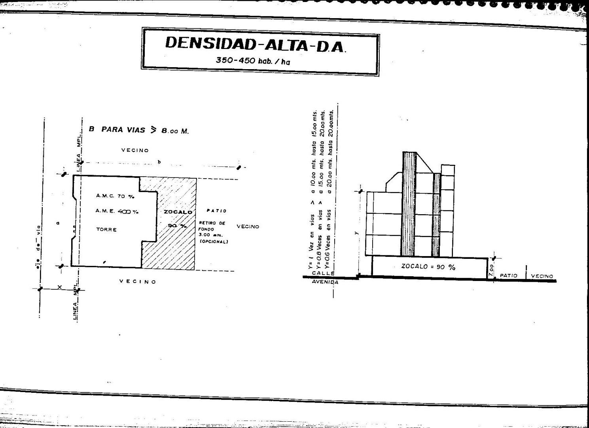
Fuente: Gobierno Autónomo Municipal de El Alto 2010.
Pero la normativa no se cumple en su totalidad. Las edificaciones en la Ceja ocupan el 100% del área máxima a cubrir. Algunas edificaciones que superan los 6 pisos, no tienen ascensores. Si bien la normativa permite el uso comercial y equipamientos compatibles con vivienda, estos usos trascienden hacia los demás niveles en torre, los cuales son ocupados por unidades económicas de diverso uso.
Encontramos 5 grupos de usos de suelo en la Ceja:
Podemos observar los negocios por rubro en este mapa:
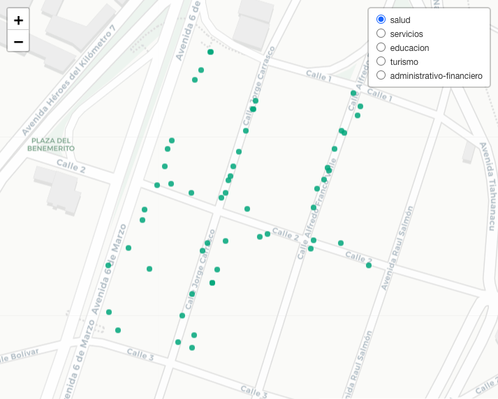
Ceja de El Alto, Ocupación en porcentaje de usos de suelo por nivel de edificaciones
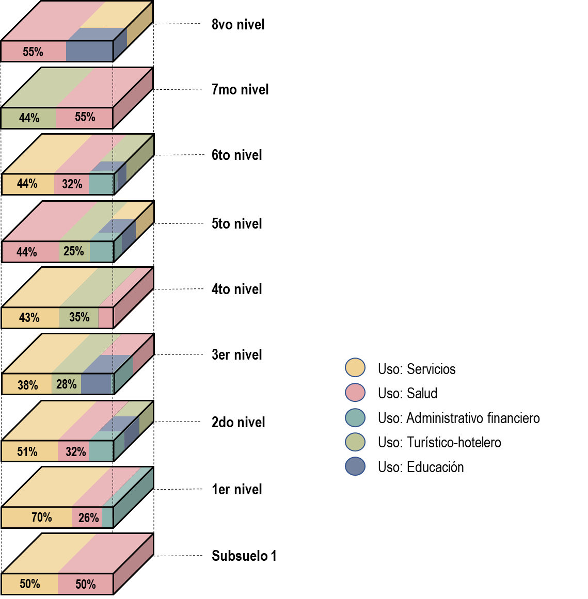
Este esquema que muestra la ocupación en porcentaje en los distintos niveles de los edificios.
La Ceja aglomera actividades que en apariencia podrían ser incompatibles, dadas las normativas urbanas de funcionamiento. Por ejemplo, la localización de bares y cantinas cerca de centros médicos o guarderías.
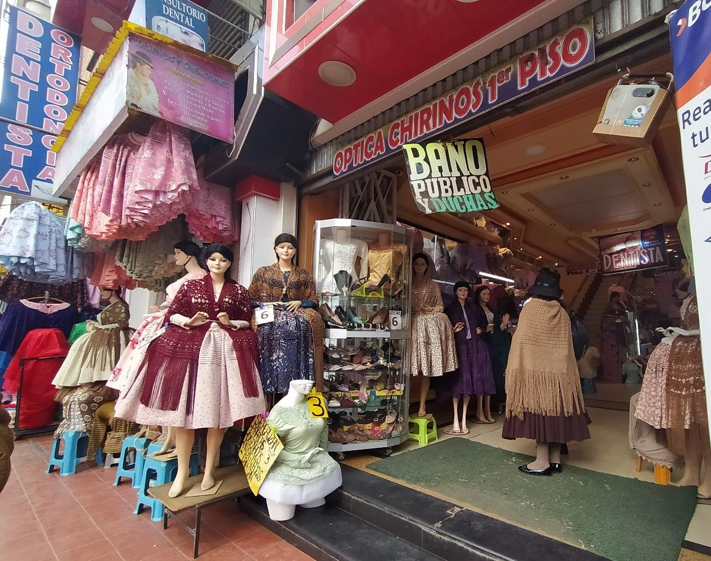
Fuente: Fotografía capturada por Vania Calle en fecha 06 de enero de 2023.
Pese a la incompatibilidad, los negocios han encontrado formas de cohesión, donde cada unidad económica dirige su oferta a demandas propias del contexto local. Por ejemplo, cerca de una discoteca, se encontrarán moteles y hostales, para aquellas personas que pasen la noche en estos centros de entretenimiento. No muy lejos de los hoteles, habrá puestos de venta de comida y caldos para despertarse luego de una noche de fiesta.
Los edificios pueden llegar a tener hasta 20 unidades económicas por planta, que se distribuyen en forma de U. Están conectadas por medio de un pasillo que permite transitar los diferentes niveles del edificio a través de escaleras. En algunos casos, los pasillos son ocupados por puestos de venta desarmables.
Ceja de El Alto: Distribución de usos por unidades económicas en una edificación de seis niveles

Ceja de El Alto: Distribución de usos por unidades económicas en una edificación de cuatro niveles con subsuelo
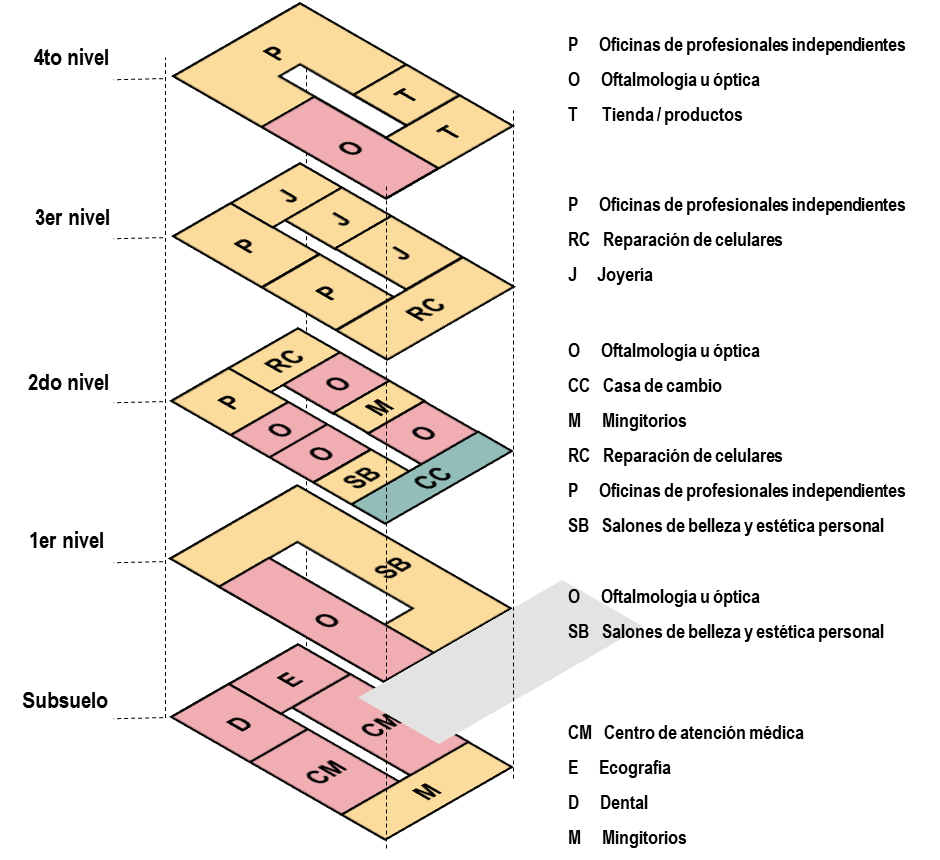
A medida que se asciende de forma vertical por las edificaciones, la cantidad de unidades económicas disminuye, así como los clientes. Hicimos este esquema de distribución de usos por niveles, el primer caso es un edificio de seis niveles y el segundo caso es un edificio con subsuelo.
También observamos un patrón de fragmentación de ambientes, que están distribuidos en diferentes niveles en los edificios de la Ceja. Por ejemplo, si juntamos en un solo lugar los servicios dispersos de consultorios médicos, rayos x, ecografías, consultorios odontológicos y farmacias podríamos tener un establecimiento de Salud de primer Nivel. En La Ceja, no hay un solo uso de suelo por edificación; lo que da pie a la fragmentación de los servicios en pequeños negocios de carácter privado.
Fragmentación de áreas de un Centro de Salud Integral de 1er nivel en edificaciones de la Ceja de El Alto
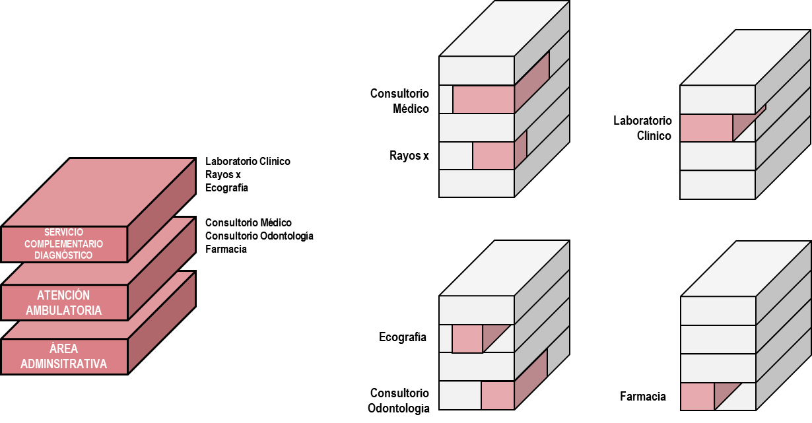
Fuente: Elaboración propia con base en (González Ríos et al., 2013, p. 203)
La compleja circulación en el espacio público, la oferta comercial y de servicios, sumado a la aglomeración diaria; ha generado inseguridad ciudadana en la Ceja, vinculada a la excesiva presencia de bares y cantinas, además de la falta de control municipal sobre su ubicación y funcionamiento. Como indica Mollericona (2007), en la zona hay calles enteras dedicadas a la “diversión nocturna”, incluyendo salones de baile, licorerías, peñas, discotecas o alojamientos, que funcionan hasta el amanecer.
Mediante la encuesta, pudimos averiguar que el 77,4% de los administradores de los negocios en la Ceja consideran que la zona es insegura. Luego, le sigue un 17,4% que señalan que la zona es segura pocas veces, y por último una percepción minoritaria de un 3,2% que piensa que la zona es segura.
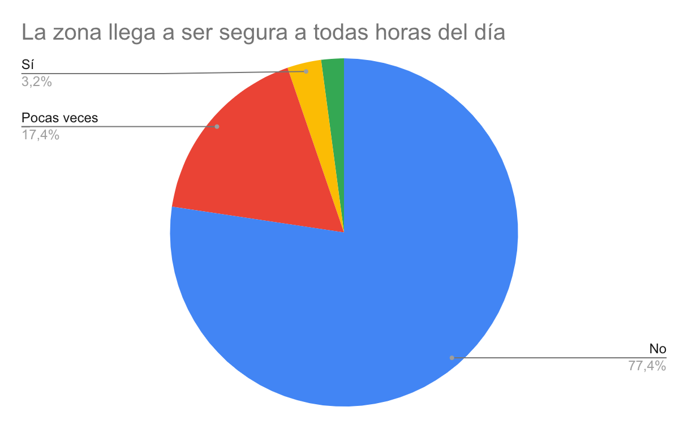
Seguidamente, preguntamos si en algún punto sufrieron un robo o asalto en su zona de trabajo. La inseguridad ciudadana es evidente, porque la mitad de ellos dijo que sí.
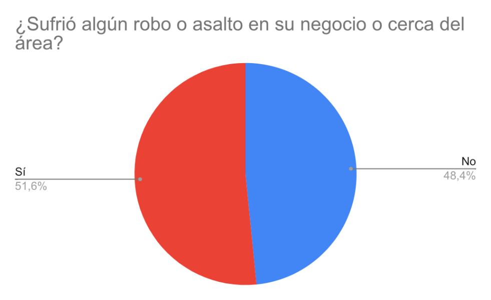
También preguntamos si los locales cuentan con cámaras de seguridad, y el 63% de los administradores dijo que los tenía.
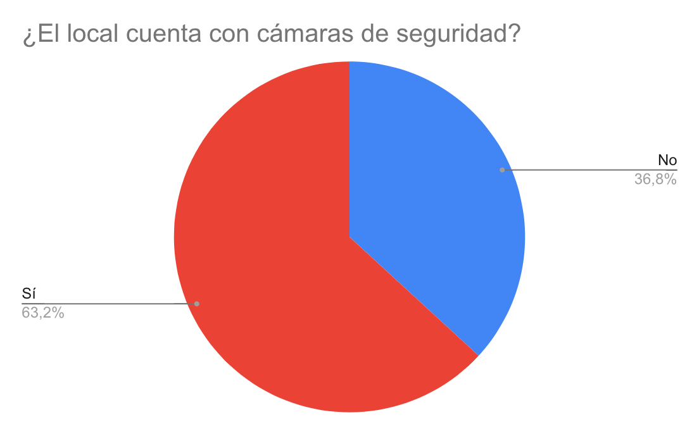
En algunos edificios de la Ceja, la gente está organizada en contra de actos delincuenciales. En las entradas, se suelen poner letreros de advertencia como este:
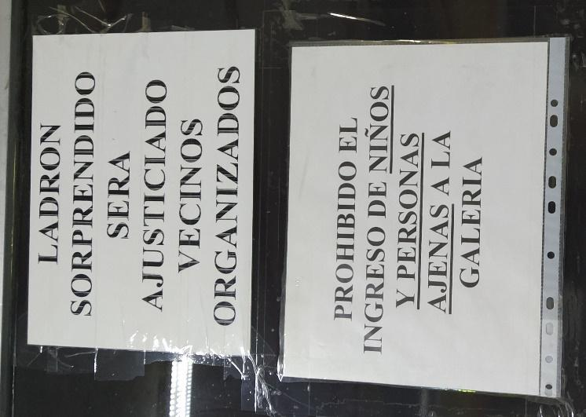
La Ceja de El Alto es un espacio urbano altamente complejo, denso y de gran importancia económica. La Ceja crea oportunidades para las familias que viven del comercio; pero a la vez resulta ser un reto para los urbanistas. Es necesario plantear alternativas urbanas que respeten las lógicas socioeconómicas populares, las normas y la distribución del espacio que las redes socio espaciales han establecido como medio de estrategia ante la falta de empleo. Por otro lado, es importante que toda iniciativa vaya acompañada por acciones que reduzcan la inseguridad ciudadana.